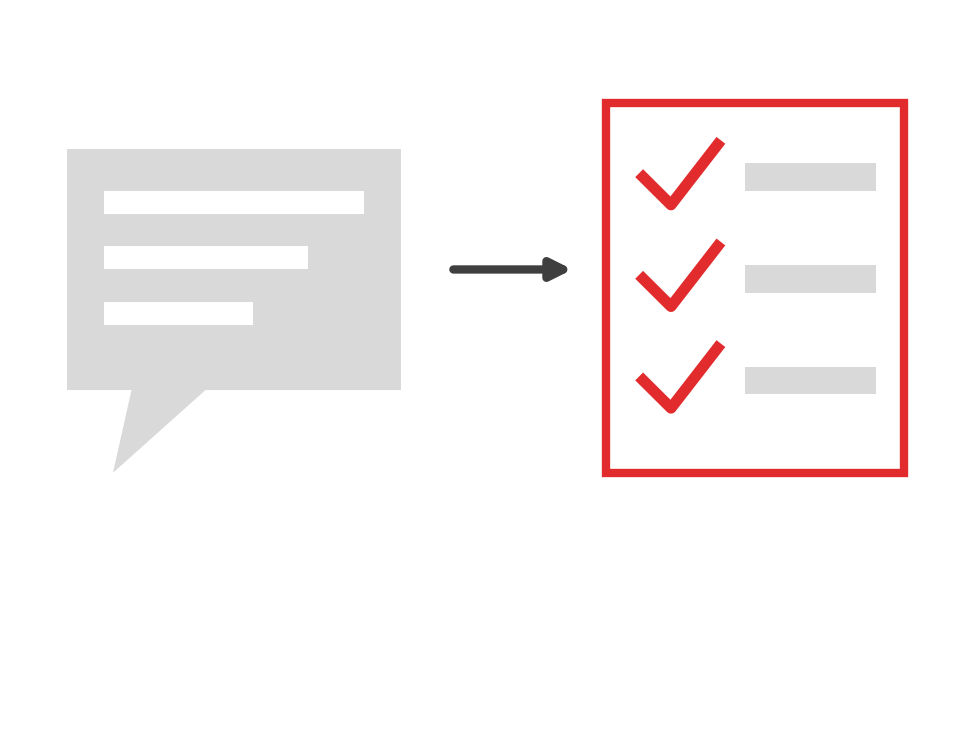
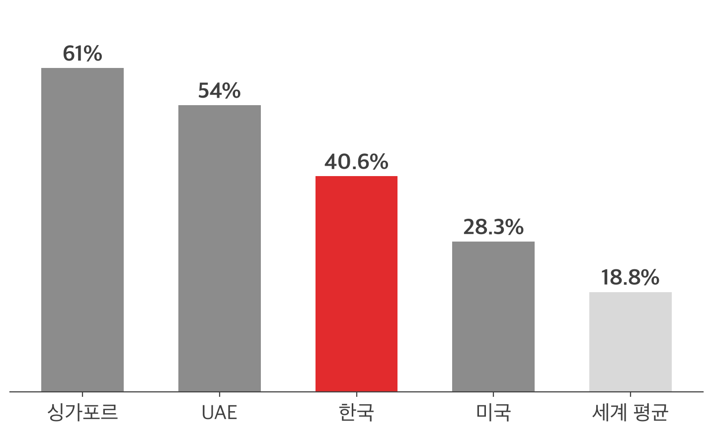
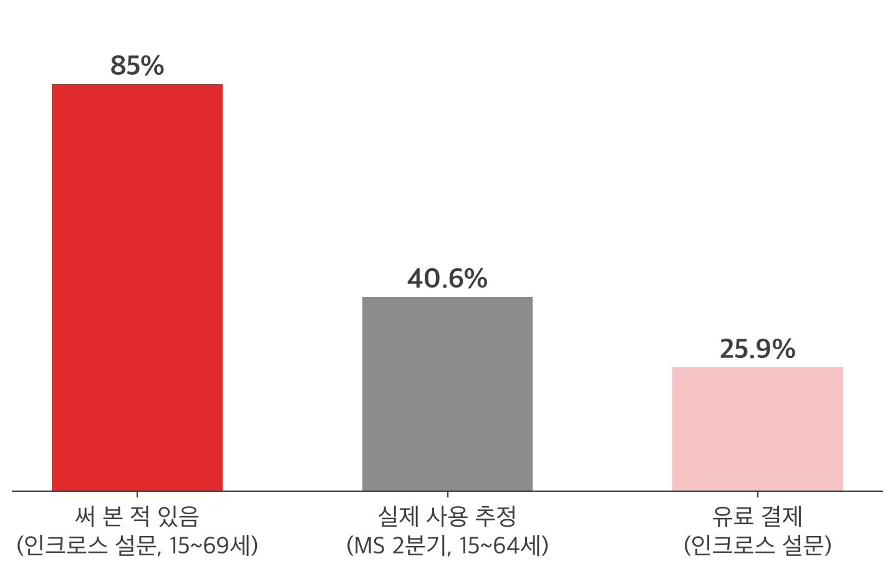
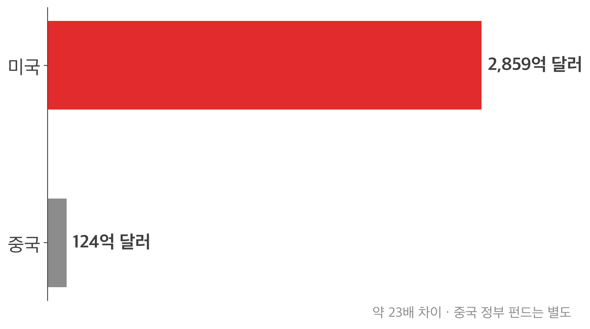
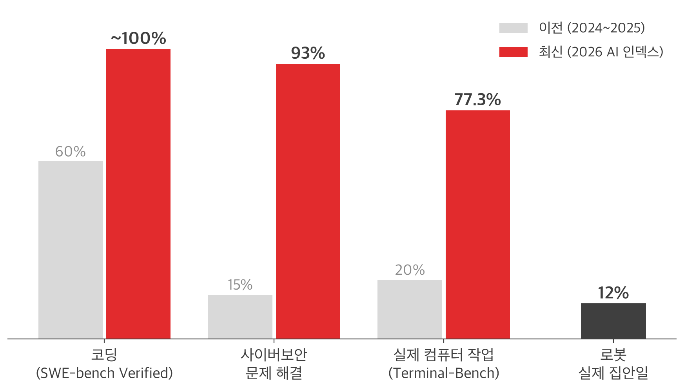

01
2026 AI 트렌드 — 말하는 AI에서 일하는 AI로
파트 1
2026, AI는 어디까지 왔나
직장인을 위한 3시간 교육 발표 · 파트 1 · 기준일 2026.11.14 · 발표 : ○○○

CONTENTS
파트 1
AI는 어디까지
왔나

이 파트의 목표
목표 1
2026년 AI의 확산 속도와 경쟁 구도를 내 말로 설명
목표 2
AI 뉴스 속 숫자를 "어떻게 쟀는지"와 함께 읽는 습관
오프닝 질문
오늘 아침부터 지금까지
AI에게 일을 시킨 분?
시키지 않았는데 AI가 알아서 해 준 일은?
오늘의 약속: 출처 등급
AI 뉴스 속 숫자는 네 등급으로 구분
| 표기 | 뜻 | 예 |
|---|---|---|
| [공식] | 공식 보고서·기관·학회·법령 | 스탠퍼드 AI 인덱스, IEA, EU 관보 |
| [보도] | 주요 언론·업계 보도, 여러 출처 일치 | 업계 결산 기사, 통신사 보도 |
| [주장] | 기업 자체 발표, 독립 검증 전 | "우리 모델이 난제를 풀었다" |
| [추적] | 2차 집계 사이트, 날짜·이름이 엇갈림 | 모델 출시 날짜 표 |
모든 그래프 아래 "출처 · 등급" 표시 → 보고서·회의 자료에 옮길 때도 같은 습관 권장
역사상 가장 빠른 기술
[비유] 수도꼭지
사진: espensorvik / CC BY 2.0
수도꼭지 = 생성형 AI
- 처음엔 신기한 물건, 지금은 틀면 나오는 기본 설비
- 3년 만에 "특별한 도구" → "일상 인프라"
- 물처럼 매일 쓰지만 어디서 오는지는 잘 모름
- 그래서 수질 검사(출처·검증)가 중요
역사상 가장 빠른 기술
생성형 AI, 출시 3년 만에 인구의 53% 사용
출처: 스탠퍼드 HAI 「2026 AI Index」 · [공식] — 곡선 모양은 개념도, "3년·53%"만 원전 수치
역사상 가장 빠른 기술
나라별 생성형 AI 사용률

출처: 싱가포르·UAE·미국 — 스탠퍼드 AI 인덱스 2026 [공식] · 한국·세계 평균 — MS AI 확산 보고서 2026년 2분기 [보도] · 기준 시점 다름
1,720억 $
미국 소비자가 얻는 생성형 AI 가치(연, 추정) · 1인당 가치 1년 새 3배 공식
10억 명
구글 AI 모드 월 사용자 보도
한국은 어디쯤?
같은 질문, 두 배 차이 나는 숫자

출처: 인크로스 「2026 아이엠 리포트」(ZDNet 2026.10.30), MS AI 확산 보고서 2026년 2분기(ZDNet 2026.9.28) · [보도]
왜 숫자가 다를까
- 85% = "한 번이라도 써 봄" 설문
- 40.6% = 실제 사용 흔적으로 추정
- 대상 나이도 다름 (15~69세 vs 15~64세)
- 한국 순위: 16위 → 12위 (1분기 → 2분기)
한국은 어디쯤?
한국 사람들은 AI를 어디에 쓰나
| 이용 목적 | 비율 |
|---|---|
| 정보 검색 | 76.8% |
| 이미지 생성·편집 | 38.2% |
| 텍스트 요약 | 33.8% |
| 유료 이용 서비스 (복수) | 비율 |
|---|---|
| 챗GPT | 53.1% |
| 구글 제미나이 | 43.4% |
| 클로드 | 15.4% |
출처: 인크로스 「2026 아이엠 리포트」(ZDNet 2026.10.30) · [보도] · 유료 이용자 기준 비율은 유료 결제자 중 비중
직장인 시사점: 검색·요약 = 이미 일상 업무 · 다음 단계 = "일을 맡기기"(파트 2)
모델 경쟁 연대기
최고 모델의 왕좌, 몇 달마다 교체
출처: 모델 출시 추적 사이트 다수(aiwiki, promptzone 등) · [추적] — 날짜·이름이 사이트마다 다름, 분기 단위로만 표시
모델 경쟁 연대기
2026년 분기별 주요 발표
| 시기 | OpenAI | 구글 | 앤트로픽 | 그 밖 |
|---|---|---|---|---|
| 1분기 | GPT-5.4 | Gemini 3.1 Pro | Claude Opus 4.6 | Kimi K2.5, Qwen3-Coder-Next |
| 2분기 | GPT-5.5 | Gemini 3.5 Flash, 개인 에이전트 공개 | Claude 5 세대 시작 (Fable 5·Mythos 5, Sonnet 5) | DeepSeek V4, 애플 'Siri AI' |
| 3분기 | GPT-5.6, GPT-6, GPT-6.1 | Gemini 4 | Opus 5, Opus 5.5·Sonnet 5.5 | Qwen3.8, 메타 개인 에이전트 |
| 4분기 | GPT-6.1 Terra | Gemini 4 Carbon | Fable 5.2 | Mistral Large 4 가중치 공개 |
출처: 모델 출시 추적 사이트, 업계 결산 기사 · [추적] 위주 · 정확한 날짜는 각 회사 공식 발표로 확인 필요
모델 경쟁 연대기
새 모델 뉴스를 읽는 3가지 질문
01
무엇을 더 잘하나
내 업무(문서·분석·코딩)에 해당하는 개선인가
02
얼마인가
구독료·사용량 요금 · 회사 보안 정책 통과 여부
03
무엇을 아직 못 하나
회사 발표보다 독립 평가·실사용 후기 확인
예: 한 회사는 9월 새 모델을 "범용 인공지능(AGI)"이라 소개 → 주장 독립 검증 전 · 2월 이전 세대 모델 서비스 종료처럼 "쓰던 모델이 사라지는 일"도 발생
미국 vs 중국, 그리고 오픈 모델
[비유] 공개된 레시피
사진: Muffet / CC BY 2.0
공개 레시피 = 오픈 웨이트 모델
- 오픈 웨이트(open-weight): 누구나 내려받아 쓰는 모델
- 레시피 공개 → 집에서도 같은 요리 → 외식비 하락
- 회사 서버 안에서 직접 운영 가능
- 대신 재료·주방(서버·관리 인력)은 내 몫
미국 vs 중국, 그리고 오픈 모델
돈은 미국이 23배, 성능 차이는 2.7%

출처: 스탠퍼드 AI 인덱스 2026 (2025년 기업 AI 투자) · [공식]
2.7%
미중 최고 모델 성능 격차 (2026년 3월, 미국 앤트로픽 모델이 앞섬) 공식
중국은 정부 펀드로 별도 투자 (2000~2023 추정 9,120억 달러, 여러 산업)
미국 vs 중국, 그리고 오픈 모델
누가 무엇에서 앞서나
| 미국이 앞섬 |
|---|
| 최상위 성능 모델 |
| 영향력 큰 특허 |
| 민간 투자 규모 |
| 중국이 앞섬 |
|---|
| 논문 수 · 인용 수 |
| 특허 출원 수 |
| 산업용 로봇 설치 |
| 값싼 오픈 웨이트 모델 |
−89% 미국으로 오는 AI 연구자 수, 2017년 대비 (최근 1년에만 −80%) 공식
출처: 스탠퍼드 AI 인덱스 2026 [공식] · "값싼 오픈 웨이트 모델"은 가격 비교 집계 [추적] (미국 프런티어 대비 60~90% 저렴하다는 분석)
미국 vs 중국, 그리고 오픈 모델
새 분쟁: "증류(distillation)"
증류란
- 큰 모델의 답을 대량으로 받아 작은 모델을 가르치는 방법
- 비유: 선생님의 정답지를 베끼는 학생
- 기술 자체는 흔함 → 남의 서비스를 몰래 쓰면 분쟁
| 시기 | 사건 |
|---|---|
| 2월 | 앤트로픽, 중국 기업들이 가짜 계정 약 2만 4천 개로 자사 모델을 증류했다고 고발 |
| 4월 | 미국 백악관, 적대적 증류 관련 각서 발표 |
| 9월 | 미국 FBI·NSA·CISA 공동 경고, 중국은 부인 |
출처: 위키백과 「2026 in artificial intelligence」 연표 · [보도] (문서에 '사실 확인 필요' 표시)
2분 토론
회사 문서를 넣을 AI를 고른다면
성능 · 가격 · 데이터 보관 위치
무엇이 가장 중요한가?
들쭉날쭉한 능력
[비유] 신발 끈
사진: Arek Olek / CC BY 2.0
천재 수학자, 그런데 신발 끈은 못 묶음
- 박사급 문제는 사람보다 잘 풂
- 시계 읽기·여러 단계 계획은 서툶
- "평균 IQ"로 말하면 오해
- 업무마다 따로 시험해 보고 맡기기
들쭉날쭉한 능력
어떤 일은 사람보다 잘하고, 어떤 일은 아직 서툶
출처: 스탠퍼드 AI 인덱스 2026 [공식] — 항목은 원전, 점의 높이는 개념도 (로봇 집안일 12%만 원전 수치)
들쭉날쭉한 능력
1~2년 사이의 점수 변화

출처: 스탠퍼드 AI 인덱스 2026 · [공식] · 코딩 "거의 100%"는 원문 표현
들쭉날쭉한 능력
능력은 오르는데, 보이는 것은 줄어듦
58 → 40
AI 모델 투명성 지수 평균 점수 · 강력한 모델일수록 공개 정보가 적음 공식
233 → 362
기록된 AI 사고 건수 (2024 → 2025) 보도
직장인 시사점
새 AI 도구 도입 전 "내 업무 샘플 10건"으로 직접 시험 · 결과를 사람이 확인하는 단계 유지
출처: 스탠퍼드 AI 인덱스 2026 [공식] · 사고 건수는 AI 인덱스 요약 기사 [보도]
파트 1 정리
세 문장으로
01 생성형 AI = 역사상 가장 빠르게 퍼진 기술 (3년, 53%)
02 1등은 몇 달마다 교체, 미중 격차는 2.7% · 오픈 모델이 가격을 끌어내림
03 능력은 들쭉날쭉 → 업무마다 직접 시험하고 맡기기
파트 1 퀴즈 · 5분
휴대폰으로 퀴즈 풀기
▶ 웹 퀴즈 ▶ 숫자 읽기 놀이터 ▶ 다음: 파트 2 일하는 AI
휴식 10분 후 파트 2 — 에이전트 · 로봇 · 과학
자료·이미지 출처
자료 (신뢰도 표기) · 사진 (Openverse, CC 라이선스)
- 스탠퍼드 HAI, 2026 AI Index · 12 Takeaways [공식] — hai.stanford.edu
- MS AI 확산 보고서 2026년 2분기 — ZDNet 2026.9.28 [보도] — zdnet.co.kr
- 인크로스 2026 아이엠 리포트 — ZDNet 2026.10.30 [보도] — zdnet.co.kr
- SK텔레콤 뉴스룸, 2026 상반기 AI 트렌드 결산 [보도] — news.sktelecom.com
- 위키백과, 2026 in artificial intelligence [보도·사실 확인 필요] — wikipedia.org
- 모델 출시 추적 [추적] — aiwiki.ai, promptzone.com